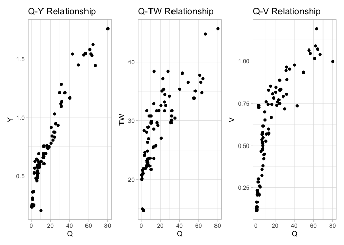

Using pre-processed observation data from the USGS, we can evaluate learn some things about estimating power law fits from noisy data.
Taking a random station we subset data occurring after 2010-01-01 and that falls within the 2 year reoccurance interval (defined via NWM v21 reanalysis product).
index = 50
tmp = usgs_obs[[index]] %>%
filter(as.Date(date) > as.Date('2010-01-01')) %>%
filter(inChannel == TRUE) %>%
filter(Ymean > 0) %>%
filter(V > 0) %>%
filter(TW > 0) %>%
filter(Q > 0) %>%
filter(is.finite(Ymean)) %>%
select(date,Q, TW, V, Y = Ymean)
dim(tmp)
#> [1] 80 5
Single Relationship fits
Here we use the FHGestimation package to fit the Q-Y relationship using OLS and NLS models:
fhg_estimate(Q = tmp$Q, Y = tmp$Y, allowance = .05)
#> NLS performs best for the Q-Y realtionship
#> type exp coef nrmse pb mean_ape min_ape max_ape
#> 1 Y 0.4781663 0.2122345 0.1324314 -0.8 0.1410238 0.0084845016 2.227273
#> 2 Y 0.4102660 0.2540058 0.1542132 -2.3 0.1326987 0.0006162981 2.296017
#> method
#> 1 nls
#> 2 olsOverall the the NLS model provides a better fit (albeit small) when measured both by nRMSE and pBais.
Full Hydraulic fits
When we have data regarding all three hydraulic states (V,TW,Y) we can ensure that the solutions found are physically valid (meets the continuity constraint Q = Y x V x TW).
In this mode the OLS and NLS models are fit, and if continuity is not met, then a Evolutionary approach is implemented. Doing so produces three unique fits for three variables (27 total combinations). These are crossed to identify the best performing relationships that meet continuity at a prescribed allowance:
(x = fhg_estimate(Q = tmp$Q,
V = tmp$V,
TW = tmp$TW,
Y = tmp$Y,
allowance = .05)$output)
#> NLS performs best for the Q-Y realtionship
#> NLS performs best for the Q-TW realtionship
#> NLS performs best for the Q-V realtionship
#> NLS meets continuity ... 👍
#> OLS meets continuity ... 👍
#> The best performing method (nls) is physically valid ... 😂
#> Y TW V viable Y_error TW_error V_error tot_error condition
#> 1 nls nls nls TRUE 0.1324314 0.1228453 0.1710605 0.4263372 nls
#> 2 ols nls ols TRUE 0.1542132 0.1228453 0.1954694 0.4725279 combo
#> 3 ols ols ols TRUE 0.1542132 0.1238710 0.1954694 0.4735535 ols
#> c f a b k m r
#> 1 0.2122345 0.4781663 18.37954 0.1746765 0.2682225 0.3370959 2.737440
#> 2 0.2540058 0.4102660 18.37954 0.1746765 0.2074655 0.4250980 2.348719
#> 3 0.2540058 0.4102660 18.73285 0.1638955 0.2074655 0.4250980 2.503217In the above example we see that NLS was able to provide better fits the OLS but neither NLS or OLS was able to provide physically valid solutions (c1, c2, viable). While the GA approach was able to provide a physically valid solution, its error was almost 10% higher then the OLS/NLS methods.
However a combined approach of a NLS, OLS, and GA fit was able to provide a physically valid result with only 0.9% more error the seen in the best performing NLS method.

Take home points of this work:
NLS is better then OLS for predicting single relationships in almost every case and should become the defacto approach.
When fitting an entire system, OLS and NLS often provide results that are not physically valid.
EA approaches can always find a physically valid solution but often introduce disproportionate error.
Instead, using a mishmash of NLS, OLS, and GA fits (in cases of non-valid solutions), can find solutions with minimal error AND physical validity. We argue this approach is the proper way to fit FHG relationships.
This process in formalized in the FHGestimation R packages.